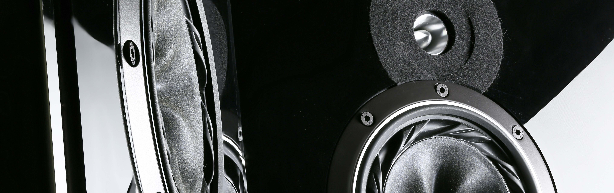
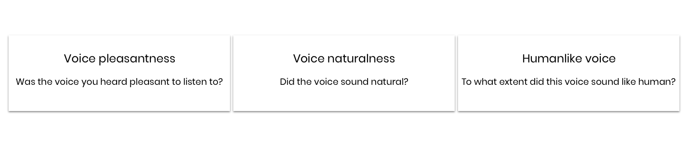
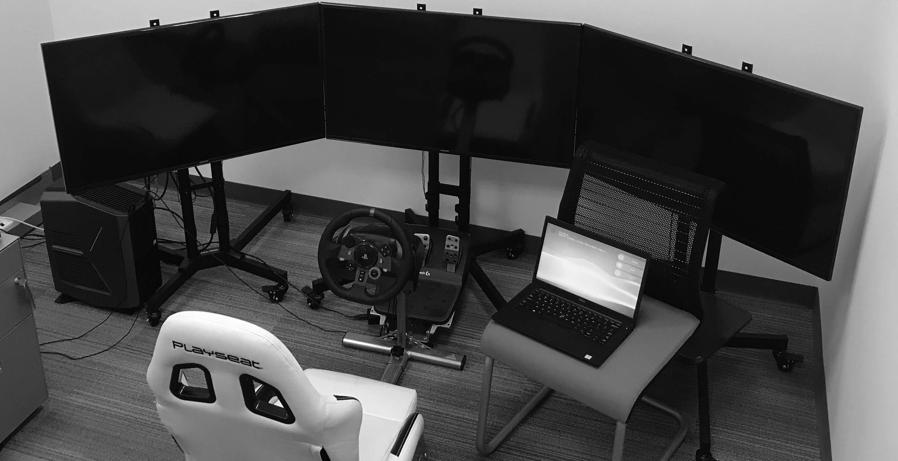
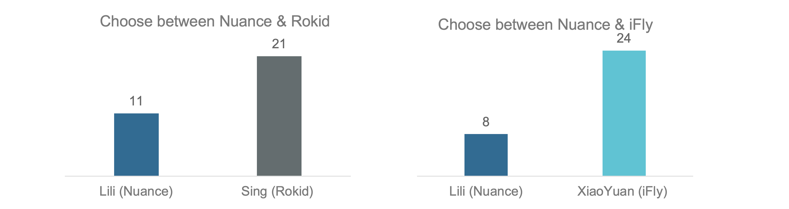

A/B test, Data Analysis
We combined MOS Study and PC Test, to evaluate the naturalness of three Virtual Voices.
Text To Speech (TTS) plays an important role in an voice-based system. It largely affects user’s subjective feeling of the system. With the booming of China’s intelligent voice market, various mainstream manufacturers have launched their own voice assistant and their own TTS voice.
In this report, we are trying to:
1. Compete Nuance TTS against some top players in this market.
2. Provide reference direction for the TTS improvement.

MOS(Mean Opinion Score) Study + PC(Pair Comparison) Test + Interview
The study focuses on the subjective feeling of the participants. They are asked to fill in a questionnaire after hearing a voice.

Subjects are presented with the same sentence produced by two different systems and are asked to indicate which one they ‘prefer’. This type of test has been used to test system overall acceptance and to determine the preference ranking of speech produced under different conditions.
Subjects will be asked why they prefer one voice to the other. The host will ask multiple questions, trying to find the root cause of their choice.

We collected and analyzed the result with Python.
MOS score is from 1 to 7，7 is the best score possible. 1 is the worst score possible.
Subjects are asked to choose their preferred voice.

Participates are asked why they choose one voice over another.
Lili pauses unnaturally，and not fluent enough.(12/16)
The intonation of Lili is always flat. Needs to have more changes of intonation to feel like a human.(10/16)
The tone of Lili is too low. Not warm enough to give user positive feeling. (6/16)
Like the speed of Lili. They think other voices are too fast. (8/16)
Lili carries information more clearly. (3/16)
With the results of our research. We worked with TTS engineers to improve the naturalness of Lili.
Here's a glance of the improvement.
The original Lili
The new Lili